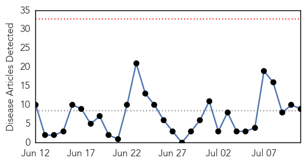
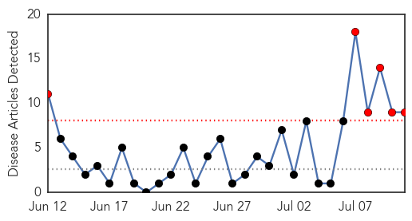
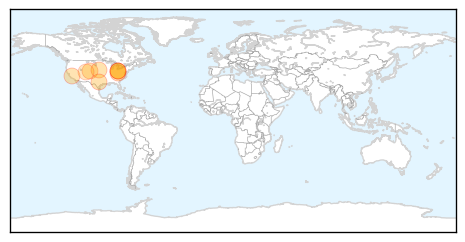

Cholera
30-Day Web Trend
0 alerts, 0 warnings

30-Day Twitter Trend
3 alerts, 0 warnings

Article Locations

Article Confidences

Top Articles:
- 0.992
- South Sudan Red Cross mobilizes volunteers to combat cholera in Juba - South Sudan
- 0.991
- Cholera Vaccine Protects Whole Community, Even Unvaccinated « Israel Grossman Article.Org
- 0.989
- Cholera Cases Overwhelm Achimota Hospital
- 0.983
- South Sudan: South Sudan Red Cross mobilizes volunteers to combat cholera in Juba
- 0.832
- Oral cholera vaccine moderately effective in reducing the burden of severely dehydrating diarrhea
- 0.761
- Over 150,000 South Sudanese now sheltering in UN bases
- 0.703
- Attention People Who Eat Dog Meat! Here are 3 Major Health Concerns You Should Know About
- 0.680
- Better Maps, Less Cholera?
- 0.631
- Medics flee war-torn S. Sudan leaving patients to die
Top Tweets:
- 0.508
- RT: 154 Haitian American diaspora leaders demand justice 4 Haiti cholera victims from UN SecGenl Ban & US SecState Kerry! …
West Nile Virus
30-Day Web Trend
6 alerts, 0 warnings

30-Day Twitter Trend
5 alerts, 0 warnings

Article Locations
Article Confidences
Top Articles:
- 0.941
- Cities take precautions against West Nile virus
- 0.933
- West Nile virus takes over in Butler county
- 0.920
- Ohio health officials urge precaution against West Nile, other insect-borne diseases
- 0.910
- West Nile Virus Reported in East Bay
- 0.909
- USA Tests Vaccine for West Nile Virus
- 0.892
- Youngstown News, Amid rainy summer, Ohio urges precautions against mosquitoes
- 0.890
- Ohio Department of Health issues precautions over rise in mosqui
- 0.759
- Ohio officials urge caution as rain breeds more mosquitoes
- 0.755
- Monsoons could bring more mosquitoes
Top Tweets:
- 0.699
- Flavivirus news: West Nile virus detected in Martinsville - Reporter-Times: West Nile virus det... http://t.co/Ej5yDACDgA pathogenposse